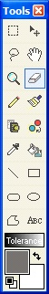
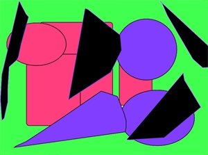
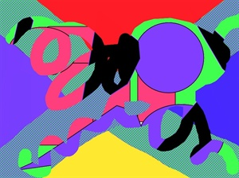

The Eraser Tool (Tools-->Eraser) operates very similar to the Paint Brush Tool. The main difference is that Paint Brush draws onto the current layer while the Eraser Tool erases part of the image from the active layer, replacing it with a transparent alpha color. Also, you can use the Size widget to change the size of the erase region.
|   |
The first graphic is the background image while the second one is the layer on top. If you were to see these during the editing phase, you would only see the topmost layer because it completely covers the entire area of the layer. Now, in order to see the layer below, the eraser tool can be used. |

This is the result of using the Erase Tool on the topmost layer. Notice how you can now see the layer below.